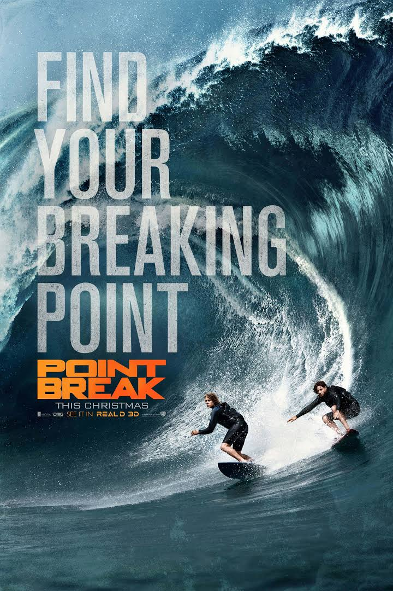
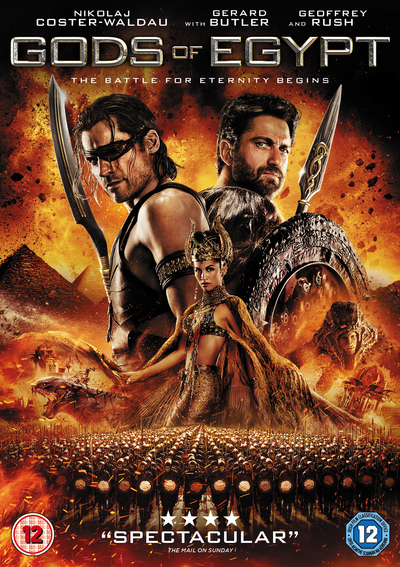

The Maze Runner
Gener:Action, Thriller
Release date: 19 September 2014
Short discription: The main character is a teenager Thomas, who wakes up in an elevator, but remembers nothing except her name. He is among 60 teenagers who have learned to survive in a confined space. Every 30 days a new boy arrives. A group of guys living in a "shelter" for two years. They feed on what can be grown on the ground, and tries to find a way out of the maze surrounding their place of residence. But one day a girl appears in a coma ...
Fast and Furious 8
Gener:Action, Crime, Thriller
Release date: 14 april 2017
Short discription: Fasten your seat belts - the race continues. Havana, Berlin, New York - for the coolest team in the world there is nothing impossible while they are together. But when one of the most beautiful women on the planet and the Queen of Cybercrime turns out to be on their way, the ways of friends will diverge.

Point Break
Gener:Action, Crime, Thriller
Release date: 25 december 2015
Short discription: Johnny is a young FBI agent specializing in undercover work. He has repeatedly come out of the most difficult situations, always finishing his work to the end. His next assignment is the penetration of a gang of thieves. However, these people are not ordinary robbers: their main difference from the rest is the passion for extreme sports. They use their skills at every new robbery, and it is very difficult to become part of their team. To enter the gang and stop the criminals, Johnny will have to prove that he is the same as them, and for this he will have to risk his own life more than once ...

Gods of Egypt
Gener:Action, Fantasy, Adventure
Release date: 26 February 2016
Short discription: Formerly, the peaceful and prosperous Egyptian kingdom is plunged into disorder: the ruthless lord of darkness Seth kills Osiris' own brother and usurps the throne. The call to him is unexpectedly thrown by the usual short-lived, inventive young kidnapper. In order to bring his beautiful beloved back to life, he has to create the conditions with the help of the powerful and vengeful Lord Gorka. Only by carrying out a test of strength and sacrificing all the most precious, they will be able to confront Seth and his minions in the world of the living and the world of the dead.